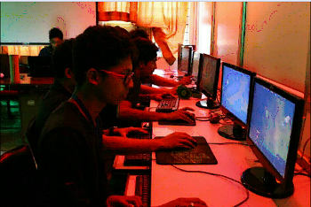

Established in 1973, Vidya Vikas Mandal's Shree Damodar College of Commerce & Economics- the flagship institution of Vidya Vikas Mandal, is recognised all over Goa as a premier institution of higher education.
The college has U.G.C recognition & is permanently affiliated to Goa University.
BACHELOR OF COMPUTER APPLIACTION (BCA)
The IT sector is one of the most rapidly growing service sectors in India as well as in the world, & offers
huge employment opportunities. The BCA programme aims to produce an employable IT workforce that will
have sound knowledge of IT & bussiness fundamentals that can be applied to develop & customize
solutions for Small & Medium Enterprises. The 3-year, 6-semister programme provides a focussed
programme for students who wish to pursue careers in IT and related areas.
The BCA Programme is a self-financed 3-year, 6-semister programme. Each semester is of approximately 5 months duration. The Odd Semisters(Semister I, III & V) begin in June & the Even Semisters(Semisters II, IV, & VI) begin in November.
An interesting feature of the BCA programme is the continuous internal assessment with quizzes, student seminars, student presentations, and other innovative methods of assessments that help develop the students confidence, presentation skills, software development skills, communication skills, independent thinking, etc.
